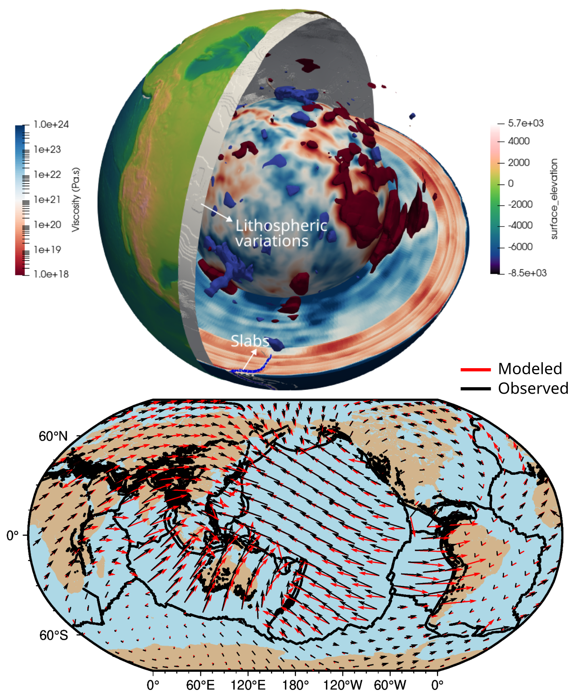
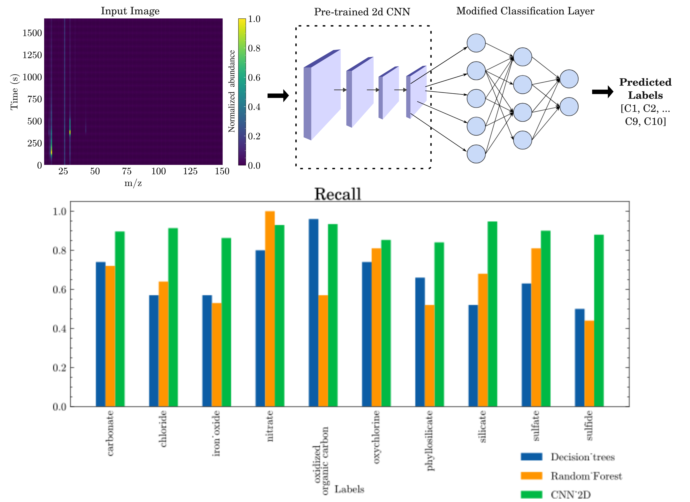
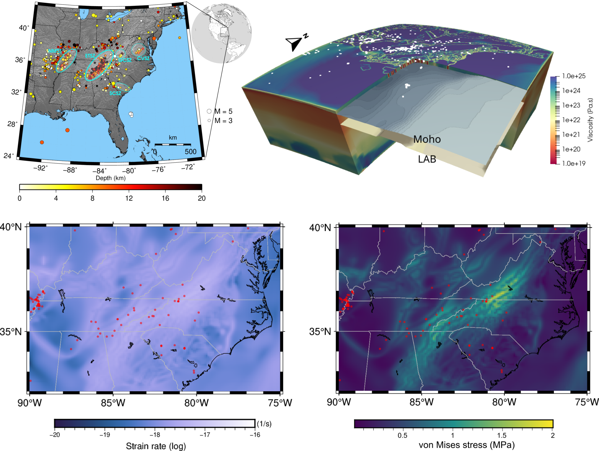
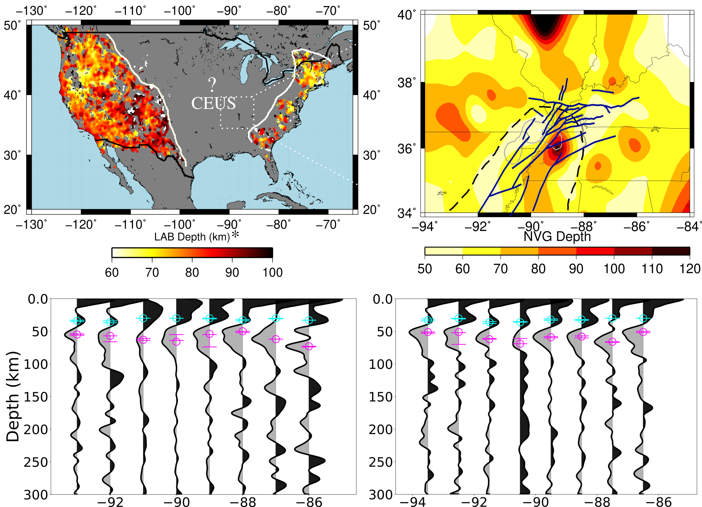

What forces drive the surface motions?
The Earth's surface constantly changes due to tectonic plate movements, causing orogenesis, seismic activity, and volcanism, all ultimately coupled
to the mantle forces below.
To understand how these forces interact to drive plate motions, we develop high-resolution numerical models of mantle convection that
are data-driven and physics-based in ASPECT .
Our compressible mantle flow models capture heterogeneity from surface to the core-mantle boundary.
Using GPS observations as constraints, we find an accurate representation of the present-day physical properties inside the Earth.
These models simulate how mantle forces interact to reveal what drives the individual tectonic plates
and how that motion shapes the world we see around us.

ML networks to identify rock compounds
We use machine learning to identify chemical compounds from mass spectrometry data collected by the Curiosity rover on Mars.
By combining advanced deep learning models with data augmentation techniques to overcome limited sample sizes,
our best model achieved over 84% accuracy in classifying chemical compounds, reaching up to 94% for some.
This work marks an exciting step toward a fully autonomous, on-board chemical classifier for planetary exploration.

Intraplate earthquakes in the Central and Eastern US
Intraplate earthquakes require a mechanism to localize stress far from the plate boundaries. Using recent observational constraints from seismology,
we develop viscoplastic models of the upper mantle in the Central and Eastern US and explore the primary drivers of intraplate seismicity.
Our results indicate that mantle-driven flow in this region is capable of reactivating preexisting crustal rifts,
providing new insights into earthquake hazard for this region.

Lithospheric discontinuities below CEUS
We employ S-wave receiver functions from 688 earthquakes recorded across 174 seismic stations to image lithospheric structure beneath the Mississippi Embayment.
Our results reveal a continuous mid-lithospheric discontinuity between 50 and 100 km depth, interpreted as a negative velocity contrast.
Quantitative analysis attributes this discontinuity to combined variations in temperature, water content, and melt, offering a mechanistic explanation for lithospheric thinning in the Central and Eastern US.
Publications
- Fraters, M. R., Billen, M. I., Gassmöller, R., Saxena, A., Heister, T., Li, H., & Wang, Y. (2024). The Geodynamic World Builder: A planetary structure creator for the geosciences. J. of Open Source Software. DOI
- Saxena, A., Dannberg, J., Gassmöller, R., Fraters, M., Heister, T., & Styron, R. (2023). High‐resolution mantle flow models reveal importance of plate boundary geometry and slab pull forces on generating tectonic plate motions. J. of Geophys. Res.: Solid Earth. DOI
- Lee, S., Saxena, A. Song, J. H., Rhie, J., \& Choi, E. (2022). Contributions from lithospheric and upper-mantle heterogeneities to upper crustal seismicity in the Korean Peninsula. Geophys. J. Int.. DOI
- Chatterjee, A., Saxena, A. Aslam, K., Van Alstine, A., \& Zeb, M. S. (2022). The variation of b-Value of earthquakes during COVID-19 lockdowns: Case studies from the Cascadia Subduction Zone and New Zealand. J. of Info. Manag.. DOI
- Saxena, A. Langston, C. A. (2021). Detecting lithospheric discontinuities beneath the Mississippi Embayment using S-wave receiver functions. Geophys. J. Int.. DOI
- Saxena, A. Choi, E. \& Powell, C. A. (2021). Seismicity in the central and southeastern United States due to upper mantle heterogeneities. Geophys. J. Int.. DOI
- Geng, Y., Powell, C. A., Saxena, A. (2020). Joint local and teleseismic tomography in the central United States: exploring the mantle below the upper Mississippi Embayment and the Illinois Basin. J. of Geophys. Res.: Solid Earth. DOI